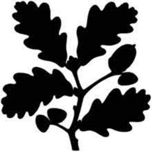

Trade Mark Journal No.2025/050 12 December 2025
UK00004298816 21 November 2025 (35,36,37,41)

- Class 35
- Operation of loyalty and incentive schemes; arranging and promotion of charitable fundraising events; advertising services to promote public awareness of environmental, conservation and heritage issues and initiatives; providing, maintaining and operating information displays, visitor displays, information centres and visitor centres; management of conservationists and conservation volunteers; retail services in connection with paints, coatings and colourants to protect, decorate and provide a functional surface, home and interior furnishing products, furnishing fabrics, curtains and drapes, blinds, textiles, fabric, tea towels, rolls of fabric and other textiles, soft furnishings, curtain and drape materials, upholstery materials, loose covers for furniture, linens and bedlinen, blankets, eiderdowns, tea towels, towels, napkins, table cloths, table covers, table mats, pillows and cushions, pillow and cushion covers, handkerchiefs, tapestries, textile wall hangings and embroidery hangings, cheese cloths, rugs, mats and matting place mats, hessian sheets, home furnishings, furnishing fabrics, ornaments for the home, mirrors, picture frames, homeware, wools, yarns and threads all sold in kit form for tapestry work, wools, yarns and threads for textile use, textile and textile goods, textiles for making articles of clothing, lace and embroidery, artificial flowers, embroidery crafting kits, kitchen textiles, flags, decorative objects for domestic use, building and home improvement products, gardening tools, implements, machines and apparatus, ornaments and articles for gardening, garden sculptures, lawnmowers, garden paving and slabs, paving, tiles, bricks and building blocks, rockery stone, stone, garden gates, letter boxes, kneelers, terrariums, garden gnomes, garden wall art and hanging décor, garden obelisks and garden trellises, watering cans, sprinklers for watering flowers and plants, hoses, outdoor garden pots, indoor pots, garden planters, saucers for garden pots, terracotta pots, gardening gloves, garden lighting, gardening aprons, wheelbarrows, power tools, drills, screwdrivers, hammers, agricultural, aquacultural, horticultural and forestry products and grains, fresh fruits and vegetables, seeds, natural plants and flowers, roses, organic flower bulbs, seedlings for planting, cut flowers and plants, living plants, raw and unprocessed grains and seeds, fresh herbs, shrubs and trees, indoor and outdoor furniture, doors and windows, flooring, carpets and matting, linoleum, wallpaper, wall hangings, Luxury Vinal Flooring, wall tiles, kitchenware, blenders, coffee grinders, kettles, coffee machines, bread toasters and bread making machines, electrical and electronic apparatus, washing machines, dishwashers, spin dryers, bathroomware, bathroom fittings and fixtures, greenhouses and garden buildings and conservatories, summerhouses, garden sheds, gazebos and garden arches, cosmetics, toiletries, perfumes, soaps, perfumery, essential oils hair lotions, dentifrices, candles, scented candles, incense, diffusers, fragrance bottles and glass bottles, cleaning, polishing, scouring and abrasive preparations and substances, cleaning preparations and other substances for laundry use, plasters, disinfectants, clothing, footwear, headgear, swimwear, nightwear, leisurewear, sportswear, outdoor clothing, scarves, gloves, glasses, sunglasses, jewellery, bags, knapsacks, purses, wallets, cosmetic bags, washbags, trunks and travelling bags, handbags, rucksacks, umbrellas, parasols, food and drink products, alcoholic beverages and spirits, confectionery, baking sets, food for babies, dietetic substances, beverages for animals, food for animals, pet foodstuffs and pet beverages, bird seed, bird food, pet clothing, pet accessories, pet leads and leashes, collars for pets, pet crates, pet furniture, pet mattresses and accessories, pet cushions, dog beds, inflatable pet beds, pet shampoos, pet stain removers, pet treats, bird houses and bird boxes, habitats for creatures including ladybirds, insect houses and habitats, bat boxes, brushes for grooming pets, pet feeders, pet paw cleaners, pet feeding dishes and bowls, jars for pet treats, toothbrushes for pets, pet drinking bowls, cages for household pets, litter trays for pets, feeding boxes, bird baths and bird feeders, feeding poles, nest boxes, mammal habitats, pet feeding mats, pet toys, toys, games and playthings for pet animals, tents and camping products, binoculars and telescopes, radios, watches, cameras, magnets, sleeping bags, torches, keyrings, hip flasks, pocket flasks and tankards, cool boxes, picnic crockery, picnic accessories, fitted picnic baskets, stainless steel water bottles, water bottles, drinking bottles, vacuum flasks and thermal mugs, insulated mugs, insulated bottles, infants drinking bottles and containers, lunch bags and lunchboxes, ropes, string, nets, tents, awnings, tarpaulins, sails, belts and harnesses, airbeds, sleeping mats, camping furniture, inflatable mats, hiking accessories, drinking vessels and barware, cutlery, electric and non-electric toothbrushes, cases of textile materials for hot water bottles and sleeping garments, sleeping bags, reusable wax coated fabrics for wrapping food, oil cloths, clocks and watches, lens cloths (cleaning cloths for wiping optical lenses), lighting fixtures, fittings and elements, kitchen and other sanitary installations, kitchen worktops, glass worktop protectors, picture rails and shelves, apparatus for heating and cooking, printed publications, books, magazines, diaries, calendars, notebooks, notecards, stationery, tape, ribbon, greeting cards, postcards, stickers, posters, wrapping paper, paper, cardboard and goods made from these materials, fireplaces, mantles and mantelpieces, clothes stands, picture frames, coat hangers, nameplates, ladders, vases, trinket boxes, domestic utensils, household utensils and containers, kitchen utensils and containers, articles for cleaning purposes, ironing boards and covers, cookware and utility products, glassware, articles made of ceramics, ceramic ornaments, ceramic tableware, ceramic trinket trays, ceramic table mats, porcelain, earthenware, crockery, articles of glass and crystal, chopping boards, combs and brushes, games and playthings, gymnastic and yoga mats, sports articles, playing cards, decorations for Christmas trees; information, advisory and consultancy services relating to the aforesaid services.
- Class 36
- Charitable fundraising services; charitable collections; organisation of charitable collections; charitable fundraising by means of entertainment events; organisation of fundraising activities and events; investment of funds for charitable purposes; financial arrangements to facilitate charitable giving; management of real estate advisory services relating to the management of real estate; providing project grants for environmental and health awareness projects; financial grant services; management of grant schemes; financial management of building projects; financial planning and management; investment consultancy services; information, advisory and consultancy services relating to the aforesaid services. .
- Class 37
- Renovation, restoration, development and maintenance of land and buildings; repair and maintenance of buildings and building installations; repair of architectural features; conservation and preservation services; heritage, conservation and preservation services relating to buildings, coastlines, forests, woods, fens, beaches, farmland, moorland, islands, archaeological remains, nature reserves, villages, historic houses, gardens, mills and pubs; preservation of buildings; conservation and preservation services in relation to works of art, furnishings, furniture and historic artefacts; project management services relating to the aforesaid services; construction and installation of conservatories, garden rooms, arbours and greenhouses; information, advisory and consultancy services relating to the aforesaid services.
- Class 41
- Arranging and conducting of entertainment and sporting events for charitable fundraising; on-line reference library services; certification services; accreditation services; provision of access to land, wildlife reserves, conservation sites, environmental sites; provision and organisation of recreational services, facilities, activities, events and sporting facilities, activities and events; provision of study centres, residential study centres, conservation volunteer centres; festivals; provision of social club services; organising social gatherings; provision of organisational services (using the internet, mobile phones and telecommunication networks) to arrange meetings and social events for groups of friends; production, presentation and distribution of television and radio programmes, audio, video, still and moving images and data including online from a database, over the Internet; provision of visitor services to provide visitors with convenient informed access to countryside, historic areas or historic properties, buildings and places, coastlines, forests, woods, fens, beaches, farmland, moorland, islands, nature reserves, villages, historic houses, gardens, mills and pubs; provision of education and educational information about the countryside, historic areas and properties, buildings and places, coastlines, forests, woods, fens, beaches, farmland, moorland, islands, nature reserves, villages, historic houses, gardens, mills and pubs; provision of visitor attractions for entertainment purposes; provision of visitor attractions for cultural purposes; providing online virtual guided tours; provision of online digital exhibitions and experiences; providing online guided talks and tours about collections of artefacts, art and precious items; providing online guided talks and tours; conducting guided tours; education and training in relation to nature, conservation and the environment; education relating to buildings and places, coastlines, forests, woods, fens, beaches, farmland, moorland, islands, nature reserves, villages, historic houses, gardens, mills and pubs; educational services in relation to the conservation of historic buildings and places; provision of training courses in the field of walking and leadership projects; online publishing; publishing of electronic books and journals online; publishing of magazines in electronic form on the Internet; providing online magazines and photographs; provision of online magazines featuring information about nature, conservation, the environment, history and historic properties, geographical places and landscapes and historic and cultural collections; providing online videos, not downloadable; organisation of webinars; production of podcasts; information, advisory and consultancy services relating to all the aforesaid services.
The National Trust For Places of Historic Interest or Natural Beauty
Representative: Cleveland Scott York